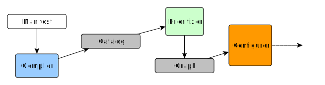
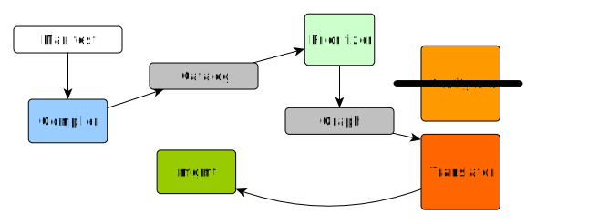

News from the Puppet-Mgmt Translator
CfgMgmtCamp 2018, Gent
Felix Frank, Systems Architect
The unbelievable Machine Company GmbH
Look who's talking
Felix (not an actual feline)
- codes things, but ops-es for a living
- Puppet nerd, writes things
- Berlin-izen, somehow not an expat
But why
enthused by mgmt since the initial presentations
James is a good chap
let ops tools be a happy family
Looking back on Part I
we were looking for a way to run mgmt from Puppet code
pro-tip: don't even bother
parsing Puppet code "manually"
range("0", "93").each |$index| {
if $index % 3 == 0 and $index % 5 == 0 {
file { "/tmp/fizzbuzz/$index": ensure => present }
} elsif $index % 3 == 0 {
file { "/tmp/fizz/$index": ensure => present }
} elsif $index % 5 == 0 {
file { "/tmp/buzz/$index": ensure => present }
}
}Everyday Puppet (apply)
The approach
The implementation
PuppetX::CatalogTranslation::Type.new :package do
emit :pkg
spawn :name do
@resource[:name]
end
rename :ensure, :state do |value|
case value
when :installed, :present
:installed
when :purged, :absent
:uninstalled
else
... Demo! (Good!)
So what's new?
Now translating augeas resources
augeas {
"enable replication":
incl => "/etc/mysql/my.cnf",
lens => "mysql.lns",
changes => [
"set target[3]/port 3307",
"set target[3]/bind-address 127.0.0.1",
],
}...except like this
augeas {
"re-enable dns":
incl => "/etc/mysql/my.cnf",
lens => "mysql.lns",
changes => [
"rm target[3]/skip_name_resolve",
],
}...or this...
augeas {
"ensure InnoDB":
changes => [
"set /files/etc/mysql/my.cnf/target[3]/default_storage_engine InnoDB",
],
}Otherwise, translator code
would look like this
rename :incl, :fileInstead this happens
spawn :file do
if @resource[:incl]
@resource[:incl]
else
translation_failure "does not use the 'incl' parameter, which mgmt needs"
nil
end
end
ignore :inclLet's see some more demo (good!)
Also, AWS
mgmt now has native support
for managing EC2 instances
Puppet gets this through the puppetlabs/aws module
The translator copes
PuppetX::CatalogTranslation::Type.new :ec2_instance do
emit :"aws:ec2"
...Let's look at the list of supported parameters
mgmt EC2 parameters
- State
- Region
- Type
- ImageID
- WatchListenAddr (for SNS)
- UserData
Puppet EC2 parameters
Translator input is potentially
rather more elaborate than the output
This must be communicated to the user
Let's see things break (bad!)
Severity levels
Warning: mgmt won't do it all,
but manage the essentials
Error: mgmt won't behave quite like Puppet
Works with small manifests and one-liners
Overwhelming at scale
It's about to get weird, folks

In light of this, let's take a step back
Do we want to run arbitrary manifests?
Do we want an established language?
Is it even feasible for mgmt
to become a Puppet stand-in?
Let's figure it out
See you at the hack day
Thanks
- "Napster Bad" by Camp Chaos